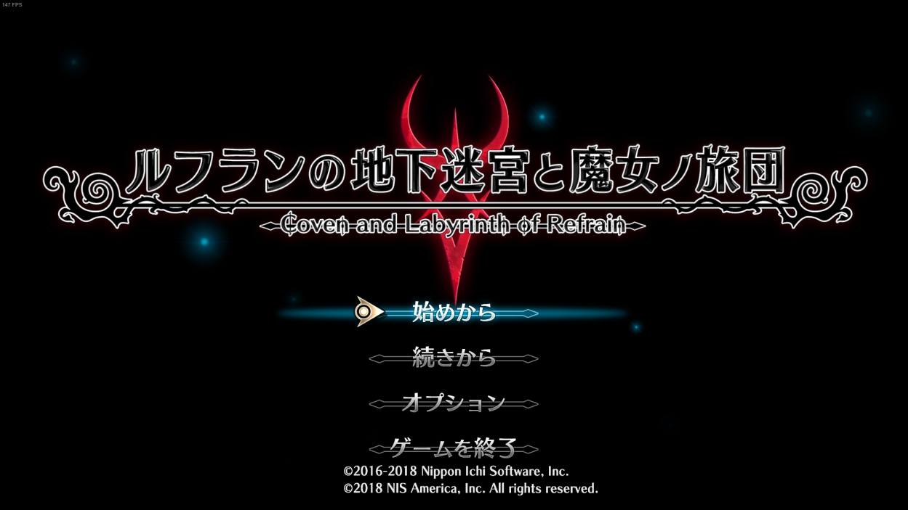

なつかしー！
ずいぶん前に vita 版をクリアしていたのですが、ガレ魔女が発売されるため復習がてら購入しました。
まだ三領主あたりですが、このダークな感じは癖になっておもしろいですね。
ガレ魔女はやくほしいです！
では本題に Let’s go！
コントローラーが使えない！
ゲーム始めるぞ！って意気込んだらこれでした。ﾂﾗｲ
そのときは「まあ設定ミスかなー」とおもってたのですが、確認してみるとどうも違う。
Windows & Steam 上では反応しているので？？？
キーボードでは動作できたので、とりあえずは大丈夫なのですがやりづらい・・・
ふと、そういえばこんなこと前もあったなと思い出したのでその対処法を試してみることにしました。
くらえ！
環境
ゲーム:ルフランの地下迷宮と魔女の旅団(Steam)
ソフトウェア：x360ce,Xipnut Plus
コントローラー:HORI PAD4
OS:windows10
解決方法
結論から書きます。詳細は下のほうに書いときます
- X360ce・Xinput Plus を導入
- Steam の BigPicture のコントローラー設定を切る
HORI コンは DirectInput なのでルフランには対応していません。
ですので、X360ce・Xinput Plus を使用して、Xinput にエミュレートします。
しかし Steam のゲームは BigPicture を介してコントローラーを読み込んでいるので、X360ce をゲームファイル下に置く方法ではコントローラーが認識しません。
これを回避するために、BigPicture でのコントローラー設定を無効化して GG です。